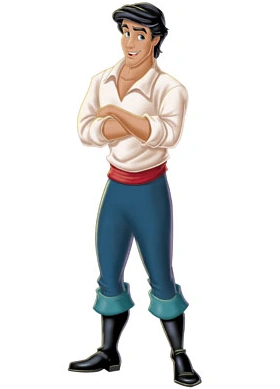
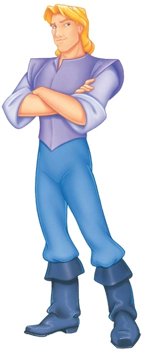
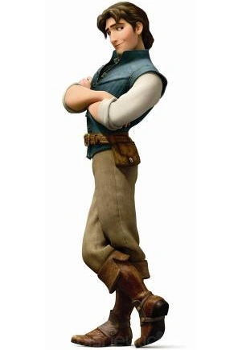
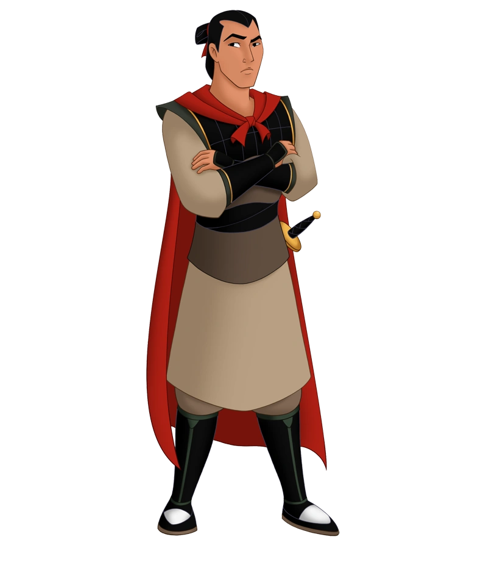
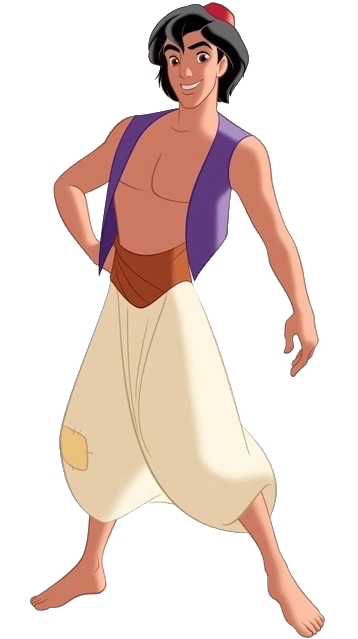
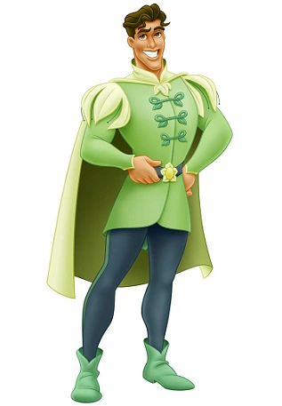
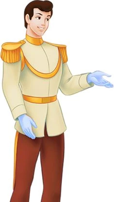
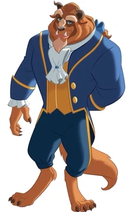
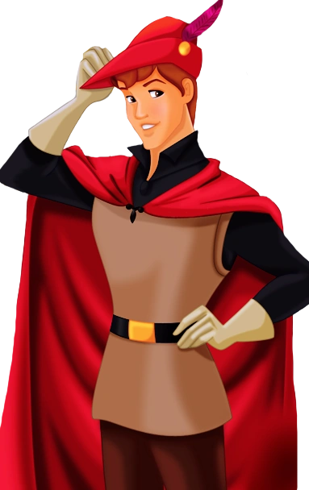

Ya conociste un poco más de tus princesas favoritas ahora conozcamos un poco de los príncipes que lograron encantar estas princesas.
Príncipes aventureros
Príncipe Eric
Eric es valiente y protector, y está dispuesto a enfrentarse a cualquier desafío por las personas que ama como Ariel. Este príncipe es leal, gran compañero y desinteresado.
Príncipe Jonh Smith
John Smith es el interés romántico de Pocahontas en su película. Este soldado inglés es cordial y amable. Se acerca a los demás de una forma respetuosa y educada. Este personaje siempre mantiene la calma y posee una mente brillante.
Príncipe flynn Rider
Flynn es un joven aventurero y simpático,Originalmente no es un príncipe pero al casarse con Rapunzel. que tiene un gran sentido del humor y es. A pesar de identificarse como un ladrón, a lo largo de la película muestra que tiene un gran corazón y que está dispuesto a arriesgar todo por amor.
Príncipe Li Shang
El General Li Shang es un apuesto y valiente joven que lucha por su país. En la fatídica guerra de China contra los Hunos pierde a su padre, pero gana al amor de su vida, Mulan.
Príncipe Aladdín
Aladdin es un personaje que al principio no es un príncipe, al que le encanta imaginar todas las posibilidades que existen en la realidad y en la imaginación. Es espontáneo, creativo y generalmente mira en el lado positivo de las cosas.5
Prínicpe Naveen
El Príncipe Naveen es un hombre relajado y de alma alegre. Adora la música, en especial el jazz, y lleva un estilo de vida despreocupado. En la película La princesa y el sapo demuestra ser una persona de buenos valores.
Príncipes Romanticos
Príncipe Henry
Henry es un príncipe de buenos modales. Le gusta la aventura y vivir al aire libre, más sabe que tiene responsabilidades reales. No quiere disgustar a su padre, pero si quiere casarse, desea hacerlo por amor. Cuando conoce a Cenicienta, decide desposarla, pero al marcharse corriendo, no llego a conocerla y con el zapato de cristal en sus manos, decide buscar a la propietaria de ese zapatito hermoso.
Príncipe Florian
El es un joven príncipe quien se enamora de Blancanieves al oírla y verla por primera vez.
Príncipe Adam
Fue un príncipe joven y apuesto que se convirtió en alguien cruel y egocéntrico antes de que una hechicera lo transformara en una horrible Bestia . Ahora está atrapado en el castillo hasta que aprenda a amar a los demás y ser digno de su amor, algo que romperá la maldición como lo hizo Bella.
Príncipe Felipe
Está comprometido con la Princesa Aurora desde pequeño. Al crecer, pasea por el bosque con su caballo Samson y escucha a una muchacha cantando. Al oír esa hermosa voz, cabalga velozmente hasta que llega hasta donde la chica, quien resulta ser una hermosa joven de la que se enamora sin imaginar que es Aurora.
Ten un poco más de información a traves de esta tabla.
| Príncipe | Película | Año de Estreno |
|---|---|---|
| Eric | La sirenita | 1989 |
| Jonh Smith | Pocahontas | 1955 |
| Flynn Rider | Enredados | 2011 |
| Li Shang | Mulan | 1998 |
| Aladdin | Aladdin | 1992 |
| Naveen | La princesa y el sapo | 2009 |
| Henry | La Cenicienta | 1950 |
| Floren | Blanca Nieves y los 7 enanitos | 1937 |
| Adam | La bella y la bestia | 1991 |
| Felipe | La Bella durmiente | 1959 |